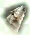

Links
| Το Official Ελληνικό Web Site του National Geographic | |
|---|---|
 |
To διεθνές Web Site της Greenpeace |
| Ελληνικό Web Site σχετικό με τα Ελληνικά Όρη (ευχαριστούμε για την παραχώρηση των πινάκων) |
|
| To διεθνές Web Site της WWF | |
|  | Eλληνικό Web Site για τους Εθνικούς Δρυμούς
(ευχαριστούμε για την παραχώρηση των κειμένων) |